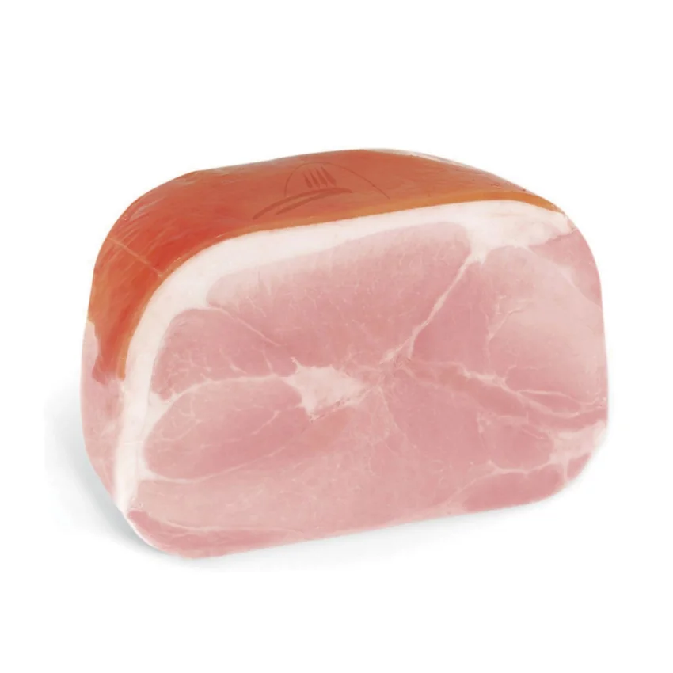

Ilustrační produktová fotografie · Zdroj ↗Prosciutto cotto
Vařená italská šunka z vepřové kýty.
Z čeho se výrobek vyrábí
Surovina: vepřové maso ze zadní kýty (stehenní svalovina prasete). Zpracování: vykostění, solení či naložení a následné vaření nebo jiná tepelná úprava. Další přísady se řídí recepturou výrobce.
Chuť a charakter
Jemná, šťavnatá; obvykle mírně slaná.
Podávání: Za studena i šetrně prohřáté.
Věta pro zákazníka
„Doma ji zkuste do focaccie s mozzarellou a rajčaty. V teplé kuchyni ji krátce zapečte v panini nebo přidejte do omelety; k tomu se hodí svěží Pinot Grigio.“
Studená a teplá kuchyně
Studená kuchyně: Tenké plátky do focaccie, obloženého chleba a salátu s rajčaty, mozzarellou a rukolou. Hodí se také k čerstvému pečivu na antipasti.
Teplá kuchyně: Vložte do panini nebo toastu až ke konci zapékání. Nakrájená se hodí do omelety, frittaty a smetanových těstovin; dlouhým ohřevem ztrácí šťavnatost.
Pokrmy a kombinace
Konkrétní pokrmy: Studená kuchyně: focaccia s mozzarellou, rajčaty a rukolou; obložená bageta. Teplá kuchyně: panini se sýrem, omeleta se žampiony, zapečené těstoviny.
Párování s potravinami: Sýry: mozzarella, jemný provolone nebo gouda. Další kombinace: rajčata, houby, hrášek, rukola, čerstvé pečivo.
Na co si dát pozor
Plátky nepřesušovat dlouhým nebo prudkým ohřevem.
Jaké víno doporučit
Pinot Grigio, svěží suché bílé víno; alternativně lehké suché rosé.